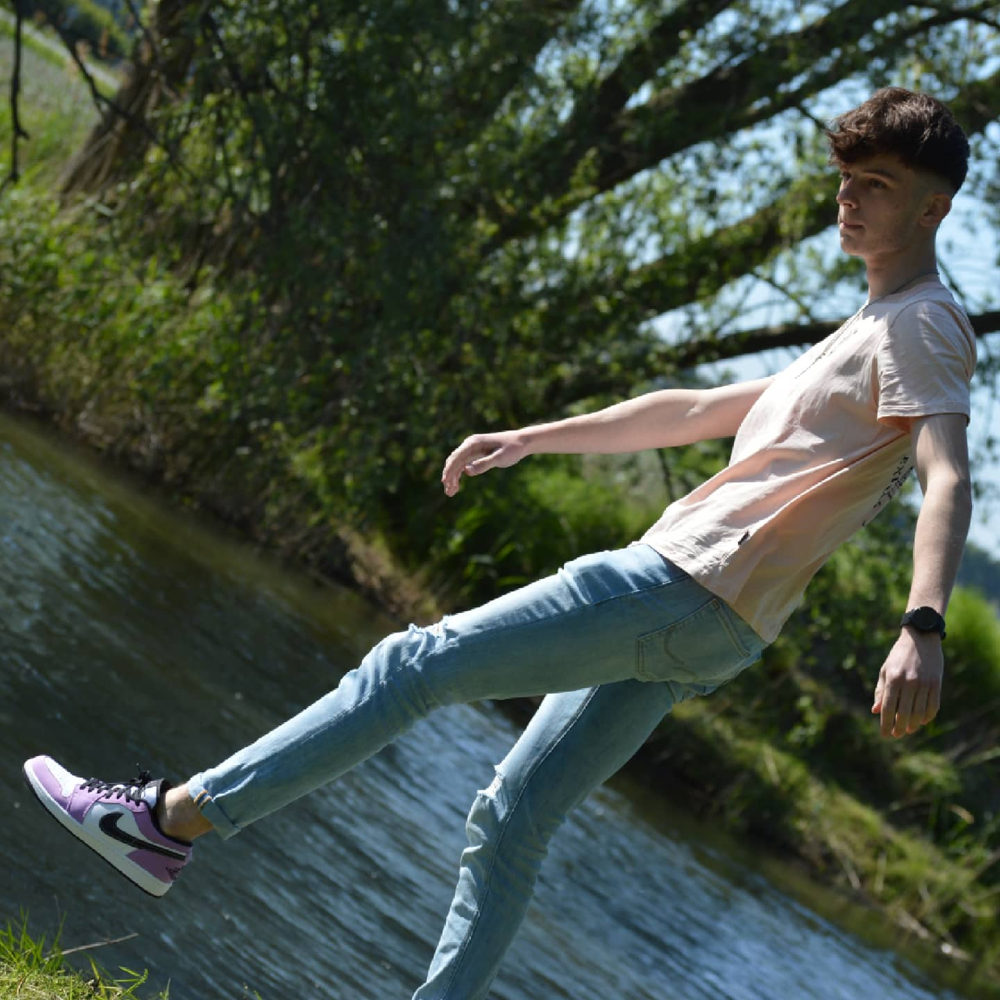
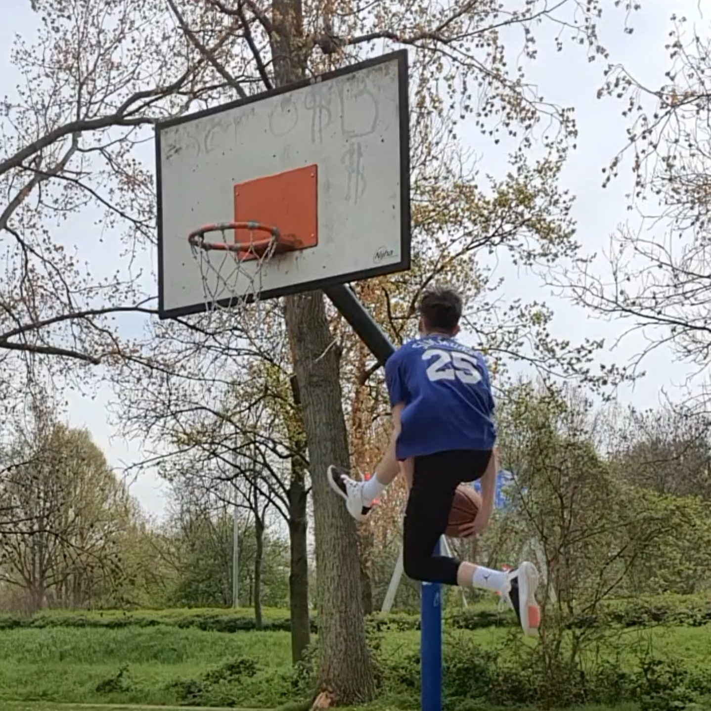

Home
Welcome to my website! On this site you will find information about me, my choices and why I chose to study HBO-ICT.
I think this study actually fits me very well. I have been interested in technology in general since I was a little boy. My friends and family often came to me when they needed help with their devices. This love for tech only grew as the years went on, so because of this it wasn't as hard for me to choose a study in comparison to other people. I see HBO-ICT as a path to a future in the world of software and computers. And as this world is only expanding and becoming more relevant by the day, I'm sure I made the right choice.


